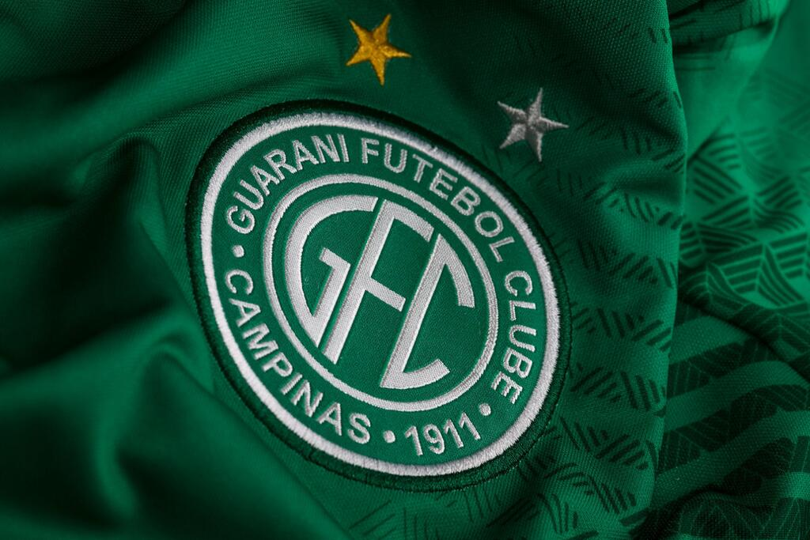

Guarani Futebol Clube

Olá, este site abordara sobre Guarani Futebol Clube. Aqui você vai encontrar uma introdução deste amado time, uma viagem por toda nossa história emocionante, detalhes sobre o nosso estádio icônico e a importância do nosso mascote. Prepare-se para mergulhar no universo do Guarani e celebrar o orgulho de ser Bugrino!
O Guarani Futebol Clube é um ícone do futebol brasileiro com uma história repleta de conquistas e momentos memoráveis. Fundado em 1911, o Guarani tem uma rica tradição e um lugar especial no coração dos fãs. Este site foi criado para compartilhar com você a paixão e a trajetória do clube, destacando desde suas grandes vitórias até os detalhes do nosso estádio e a importância do nosso mascote.